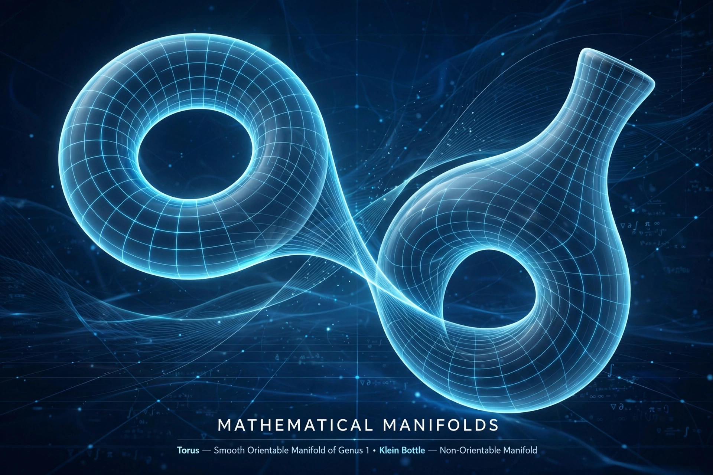

In mathematics, a manifold is a topological space that locally resembles Euclidean space near each point. A surface such as a sphere is a two-dimensional manifold: small patches look flat, though globally it is curved.

| Field | Topology, differential geometry |
|---|---|
| Examples | Sphere, torus, Möbius strip |
An n-manifold is covered by charts mapping open sets homeomorphically to open subsets of ℝn. A differentiable manifold has smoothly compatible charts, allowing calculus; Riemannian manifolds carry a metric enabling lengths and curvature.
Circles and spheres, tori, projective spaces, and configuration spaces are manifolds. Manifolds underpin general relativity, where spacetime is a four-dimensional manifold, and much of modern physics and robotics.